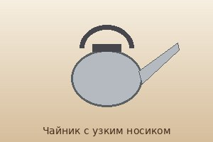
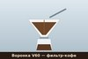

Способы заваривания
Вкус кофе зависит от помола, температуры воды (около 92–96 °C) и времени контакта воды с кофе.
Раздел 1. Как заваривать
Этапы
- Взвесьте зёрна.
- Смелите их под выбранный способ.
- Нагрейте воду.
- Заварите и выдержите время.
Виды способов и типы оборудования
- Способы
- Эспрессо (давление)
- Воронка V60 (фильтр)
- Френч-пресс (настаивание)
- Оборудование
- Кофемолка
- Весы
- Чайник с узким носиком

Тонкая струя позволяет равномерно смачивать кофе в воронке.
Миниатюра (щёлкните, чтобы открыть изображение 600×400 в новой вкладке): 
Раздел 2. Сравнение способов
| Что | Подробности | Ссылка / изображение |
|---|---|---|
| Эспрессо | 25–30 секунд, мелкий помол | цена |
| V60 | 2–3 минуты, средний помол | Чистый вкус |
| Френч-пресс | 4 минуты, крупный помол | Википедия ↗ |
| Изображение внутри ячейки таблицы: |  | |